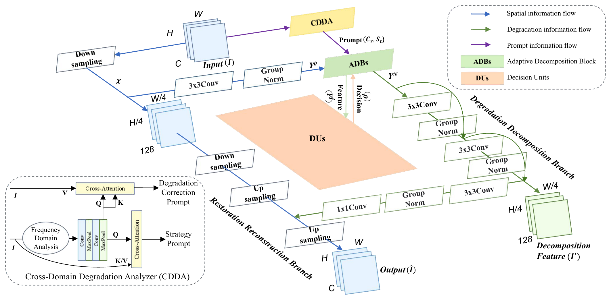

Deep Learning Programming Final Project
D3Net-based All-in-One Restoration for Smartphone Images with Dirty Lenses
SIDL adaptation, paper-baseline comparison, continued training, and failure analysis
Dataset
Problem Setup
- SIDL provides real-world degraded-clean pairs captured with contaminated smartphone lenses.
- Lens contamination causes local artifacts, contrast loss, haze, and frequency-domain distortion.
- This project analyzes D3Net adaptation under a limited class-project training budget.
Method
D3Net Architecture

Dynamic Decomposition
Dynamic Decomposition

D3Net uses prompt-conditioned feature processing so that local and mixed contamination can be handled within one restoration model.
Setup
Experimental Protocol
Baseline Comparison
Baseline Comparison
| Method | Level | Clean | Dust | Finger | Water | Scratch | Mixed | Avg. |
|---|---|---|---|---|---|---|---|---|
| AirNet | Easy | 27.10 | 23.40 | 25.10 | 24.85 | 25.84 | 25.30 | 25.26 |
| Medium | 26.13 | 19.69 | 22.53 | 20.36 | 21.24 | 16.79 | 21.12 | |
| Hard | 23.79 | 16.18 | 15.83 | 16.64 | 18.13 | 14.48 | 17.50 | |
| DiffUIR | Easy | 34.51 | 26.96 | 28.82 | 27.42 | 30.14 | 28.22 | 29.34 |
| Medium | 33.25 | 22.11 | 26.16 | 24.65 | 27.07 | 20.32 | 25.36 | |
| Hard | 29.47 | 20.38 | 18.93 | 19.91 | 21.27 | 18.97 | 21.71 | |
| D3Net ours | Easy | 32.78 | 25.07 | 24.59 | 26.38 | 27.84 | 23.32 | 26.66 |
| Medium | 30.26 | 24.03 | 23.69 | 24.05 | 27.41 | 22.56 | 25.33 | |
| Hard | 27.70 | 17.05 | 20.23 | 20.22 | 20.38 | 17.98 | 20.59 |
AirNet/DiffUIR are SIDL paper test-set values. D3Net is our epoch-73 validation result, so this is task context rather than a strict leaderboard.
Results
Ablation Study
| Run | Init. | Crop | Epoch | PSNR | SSIM |
|---|---|---|---|---|---|
| 128 baseline | scratch | 128 | 34 | 23.33 | 0.8357 |
| 256 main | scratch | 256 | 34 | 23.82 | 0.8398 |
| 256 continued | latest | 256 | 73 | 23.86 | 0.8419 |
| 256 low-LR | 256 best | 256 | 3 | 23.76 | 0.8409 |
| 512 refinement | 256 best | 512 | 2 | 23.27 | 0.8336 |
Interpretation
Cross-Difficulty Trade-off
The original D3Net training scale is roughly 1200 epochs. Our best checkpoint is epoch 73, so the result should be interpreted as limited-budget adaptation.
The training loss is L1 on normalized tensors, while evaluation uses PSNR/SSIM on denormalized [0,1] images. This loss-metric mismatch may affect convergence.
Failure Analysis
Failure Analysis
| Type | Avg. PSNR | Avg. SSIM |
|---|---|---|
| Clean | 29.87 | 0.9125 |
| Dust | 21.90 | 0.8217 |
| Finger | 21.97 | 0.7897 |
| Water | 22.87 | 0.8433 |
| Scratch | 25.08 | 0.8505 |
| Mixed | 20.67 | 0.8311 |
Qualitative Results
Qualitative Results


Each panel shows input / D3Net output / GT using original report assets.
Conclusion